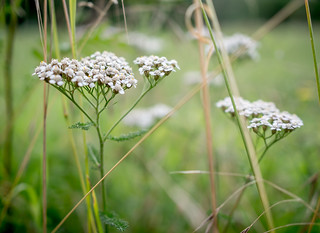

| Yarrow plants can be identified mainly from their leaves. they have lost thin leaves with many fern-like segments. At the top pf the plant they flower in severel mini flower clusters that tend to come together to form a head. This flower is said to have many medicinal uses and can easily be made into tea (and less easily into tonics). Some medicinal uses inlcude helping fight the cold, reduce bleeding, and even help with mentsrual cramping and heavy bleeding. You can find yarrow alongisde the foothills of mountains up into higher elevations. |
|  |
| With small purple flower bulbs with long petals and longer stomas these beramot are a native flower belonging to the mint family. They can be found in dry climates on the hillsides in high elevations. roughly 7,000-8,000 feet according to coloradoplants.org. They have been known to either smell like mint or oregano. Often used in herbal teas! | |
These are a lighter purple small flower with four ish main rose petals. They have jagged leaves and a yellow center once in bloom. these flowers form rose hips that are used primarily in teas. Unfurtunately for me I hate rosehip tea. But one man's meat is another's poison. These cute flowers can be found near mountain regions alongside streams or any area that gets enough moisture.